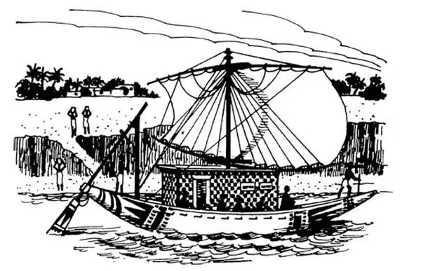
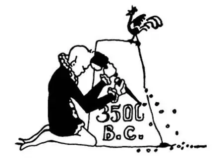

05
Real History Begins
真正的历史从此开始

YOU can remember the big things that have happened in your own lifetime.
Perhaps you may have heard your grandparents or your parents tell about things that happened in their own lives—things like World War II or the wars in Korea or Vietnam.
And your grandparents, of course, had parents and grandparents and great grandparents, just like you.
Perhaps your
may have been living when Washington was President, and his
were living in the days of Julius Caesar.
Although these ancestors, as they are called, are dead long since, the story of what did happen in all their lifetimes ‘way,’ way back has been written down in books and this story is history—his story one boy named it.
Christ was living in the Year 1—no, not the first year of the world, of course.
Do you know how many years ago that was?
You can tell if you know what year this is now.
If Christ were living today, how old would He be?
Two thousand years may seem a long time. But perhaps you have seen or heard of a man or a woman who was a hundred years old. Have you?
Well, in two thousand years only twenty people, each a hundred years old, might have lived one after the other—twenty people one after the other since the time of Christ—and that doesn't seem so long after all!
Everything that happened before Christ was born is called B.C., which you can guess are the initials of Before Christ, so B.C. stands for Before Christ. So much is easy.
Everything that has happened in the world since the time of Christ is called A.D. This is not so easy, for though A. might stand for After, we know D. is not the initial of Christ.
As a matter of fact, A.D. are the initials of two Latin words, Anno Domini. Anno means in the year, Domini of the Lord, which in ordinary, everyday language means of course since the time of Christ.
I have told you about things I have had to guess at. We call these things before-history, or pre-history, which means the same thing. But the things that have happened in the lifetime of people who wrote them down—the stories I don't have to guess at—we call history. The first history that we feel fairly sure is true begins with the people in North Africa and the Middle East.
Some people began writing down their stories thousands of years ago. What's interesting is that different peoples in parts of the world that were really far apart figured out all by themselves how to write, and they did this at different times. Ancient people in the Middle East invented a written language called cuneiform Ancient people in Egypt wrote in hieroglyphics. Centuries ago, people in India were writing in Sanskrit. People as far away as China, Nubia, and Central America invented their own writing. So did people on the island of Crete in the Mediterranean Sea, halfway between Egypt and Greece.
Today, we know how to read some of these languages from several thousand years ago. But other languages are like an unsolved puzzle. We see the writing, but we don't have any idea what it means.
If you think about all these early civilizations, which ones do you suppose we know the most about? The ones whose writing we can read, or the others? Well, I'll bet you all guessed the right answer to that question! Of course, we know the most about places whose stories we can read.
Four places whose early stories we can read about are Egypt, Mesopotamia, India, and China. We can read their writing, so we know what people were there during all those long years ago. We're not as good on the writing of Nubia or Central America or Crete, so we don't know as much about what was happening in those places long, long ago.
What's really interesting is what we do know about the places whose history we can read. We know that all four of those ancient civilizations grew up along river valleys.
Egypt was built along the Nile River valley. And Mesopotamia grew along the valleys of two rivers—the Tigris and the Euphrates. But you already know about those rivers.
Now here are two new rivers for you. India's first history took place along the valley of the Indus River and China's along the Huang River. The Huang River is sometimes called the Yellow River because the river's bottom is thick yellow mud.
Even though they lived far apart, the peoples who lived along these rivers did a lot of the same things. This isn't too surprising when you think about it. You may never have visited Africa or India or China today, but you can guess that girls and boys there play games, and that mothers cook, and so on. Even in ancient times, people around the world did many of the same things.
The river valleys were a good place to live because food was plentiful. There was lots of water for animals to drink, and to use to water plants. So men and women and boys and girls all settled down next to the rivers—in Egypt, in Mesopotamia, in India and in China.
Soon enough people were living so close together that they were living in what we call a town. Then people in these towns began to build little boats, then bigger boats. Soon the boats were sailing up and down the river to the next town and to towns farther away. The towns began to trade with each other. And sometimes the towns began to fight with each other.
One of the best ways to stop the towns from having little wars was to put them all under the rule of one person. So, in place after place, a government grew up. Sometimes the towns agreed to get together. Other times they were united when one strong man conquered his neighbors. Either way, a king, or emperor, or pharaoh was in charge of the government and was ruler of what we now call a nation.

Trading boat of river valley town （河谷镇的商船）
So, if you look back at these river civilizations, you can see a piece of history that is really quite remarkable. At a time when many people were still hunters and gatherers, maybe even living in caves, something new and exciting was happening first in Egypt and Mesopotamia and soon afterwards in India and China. People settled down and farmed, then built towns, then traded with each other, and then built nations. And, sometime during all this, they figured out that it would be a great thing to write—and so they wrote down their history for us to read today.
【中文阅读】
你一定能记得你自己生活中发生过的大事。
可能你也听过你的祖父母或父母说起过他们生活中发生的那些大事——比如第二次世界大战、朝鲜战争或越南战争等等。
当然，你的祖父母完全也像你一样，有他们的父母、祖父母和曾祖父母。
生活在华盛顿总统时期，而他的
生活在尤里乌斯•恺撒大帝时期。
尽管这些祖先们，正如他们被称为祖先那样，很久以前就已经去世，但是久远、久远以前发生在他们那个时代的故事还是被写进了各种各样的书里，而这个故事则是历史——一个小男孩曾命名为他的历史。
基督诞生于公元1年——不，当然不是世界历史的第一年。
你知道那一年到现在已经过去了多少年了吗？
如果你知道今年是哪一年，你就能回答了。
两千年似乎是很长的时间。不过，你可能见过或听说过一个活了100岁的老人，对吧？
那么，两千年的时间里，只要有二十个人，每个人活了100岁，而且是一个接着一个——从基督那时开始，二十个人这样一个接着一个地活到现在——而那似乎一点也不漫长啊！
发生在“基督诞生前”的每件事都被说成“B. C.”（公元前），你可能已经猜出来了，这里的B 和C 是Before Christ 两个单词的首字母（基督诞生前），因此，“B. C.”表示的就是“基督诞生前”的意思。就这么简单。
发生在基督诞生后的每件事都被说成“A. D.”。这一点不太好理解，因为，尽管A 可以表示after （在……之后），但是我们知道“D”并不是Christ （基督）的首字母。
事实上，“A. D.”是两个拉丁语单词Anno Domini 的首字母缩写。Anno 表示“在……年”，而Domini 表示“上帝的”，用通俗的平常话来说，两个单词连起来当然表示的就是“从基督诞生开始”的意思了。
我曾告诉过你们那些我必须靠猜想才知道的事情。当我们把那些事发生的时期说成“有历史之前”或“史前”时，两个说法意思是一样的。但是，那些被当时的人记载下的事情——那些用不着猜测的故事——我们称为历史。我们认为可信的最早的历史始于北非人和中东人。
早在几千年以前就有人开始写下他们自己的故事。有意思的是在世界各地、远隔千山万水的不同民族都各自想出了自己的文字，只不过是在不同的时间罢了。古代中东人发明了楔形文字。古埃及人则使用象形文字。几个世纪以前，印度人在用梵语书写。远在中国、努比亚和中美洲那儿的人也发明了他们自己的文字。在地中海、位于埃及和希腊之间有一个克里特岛，那里的人也发明了文字。
这些几千年前传下来的文字，我们现在可以读懂其中一些。但是还有一些就像是未解之谜。看到这些文字，我们根本不知道它们是什么意思。
想想所有这些早期文明，你认为哪些文明是我们最了解的呢？是那些我们能读懂文字的，还是读不懂的呢？哈，我敢说，你们都猜对了！哪个地方的历史记录我们能读懂，自然就是我们最了解的了。
有四个地方的历史记录我们能读懂，它们分别是埃及、美索不达米亚、印度和中国。我们能读懂他们的文字，所以我们能够知道这么漫长的历史中那儿人们的真实生活。对于努比亚、中美洲和克里特的文字我们就不那么在行了，所以对于这些地区很久、很久以前发生的事我们就所知不多了。
真正让人感兴趣的是，那些我们能读得懂历史的地区，我们究竟了解到了什么。我们知道，这四个古代文明都是沿着河谷发展起来的。
埃及是沿着尼罗河河谷建立起来的。而美索不达米亚则是沿着两条河的河谷发展起来的——底格里斯河和幼发拉底河。不过，你们已经知道这几条河流了。
现在，再向你们介绍两条河流。印度的早期历史起源于印度河河谷，而中国的历史则起源于黄河流域。黄河之所以叫黄河，是因为这条河的河底堆积着大量的黄 色泥沙。
尽管沿着这些河流生活的不同民族相距遥远，但是他们做了很多相同的事。如果你思索一下，对此就不会感到太惊讶。你可能从未去过非洲、印度或中国，但是你可以猜出来，那儿的男孩、女孩也做游戏，他们的妈妈也都负责做饭，等等。即使在古代，世界各地的人们做的很多事都一样。
河谷是适合生存的地方，因为那儿食物丰富，也有充足的水源供动物饮用和灌溉作物，所以，在埃及、美索不达米亚、印度和中国——男人、女人和孩子们都在河流附近定居下来。
很快，住在一处的人越来越多，越来越密，就形成了我们今天所说的城镇。然后，这些城镇里的人开始建造小船，接着是大船。没多久，这些船沿着河或朝上游或朝下游航行到附近的城镇，再到更远的城镇。城镇之间开始了贸易往来，有时城镇之间也发生争斗。
避免这些城镇之间发生争斗的最好办法之一就是让它们由一个人来统治。于是，各地相继成立了“政府”。有时这些城镇会同意联合起来，有时则是因为一个势力强大的人征服了邻近的城镇而将它们联为一体。不管哪种方式，都会有一个国王或皇帝或法老掌管政府，成为我们现在所说的国家的统治者。
回顾一下这些河谷文明，你就会看到一段真正辉煌的历史。当很多人还在靠狩猎和采集为生，甚至有的还生活在洞穴里的时候，首先在埃及，美索不达米亚，紧接着在印度和中国，新奇而又令人振奋的事情发生了。人们先是定居下来、学会了农耕，然后建立了城镇、彼此通商，随后建立了国家。在这个过程中，他们想到能用文字书写是件了不起的事——所以他们就开始写下自己的历史供我们今天阅读。

公元前3500年